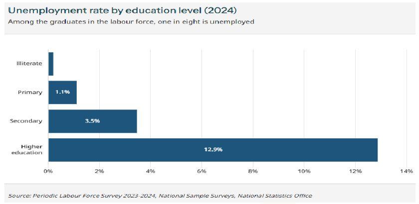
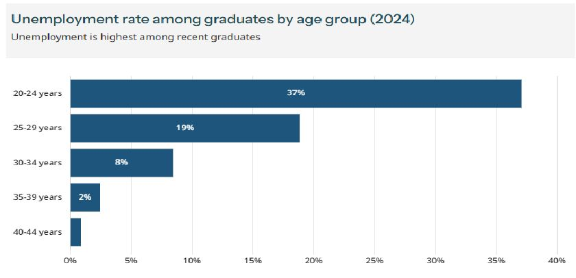
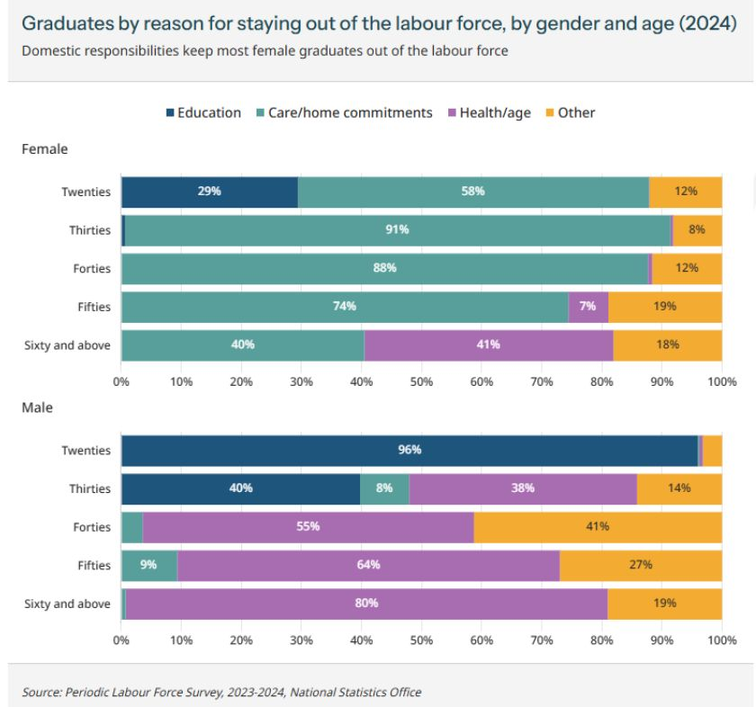
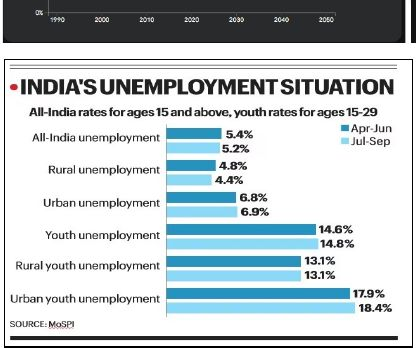

The 2018 PYQ ties poverty and unemployment to development. The poor are “too poor to be unemployed”, so UR is not a poverty measure.
Economy · GS Foundation · Chapter 3
Unemployment: Measures, Types, Causes and Labour Market
Handout only: no class slidesHandout pages 1-3410 Prelims PYQs quoted
Who counts as unemployed, the PLFS and its two approaches (usual status and current weekly status), the types of unemployment, how demand and supply explain wage-rate unemployment, India’s PLFS numbers and what hides behind them, jobless growth, the skill mismatch, labour laws, formal and informal work, the four Labour Codes, fixed-term employment and the schemes.
Chapter map#
- Unemployment
Who is unemployed
- Able and willing, not finding work
- WAP, dependents, DR 15-64 vs 15+
- LF, LFPR, UR, WPR UR = UE / LF
What counts as work
- Economic activity incl. unpaid helpers
- Domestic chores: no
- Own-consumption farming: yes
Measuring (PLFS)
- US: PS 183 days, SS 30 days headline PS+SS
- CWS: 1 hour in 7 days higher rate
- CDS dropped
Types
- Structural, seasonal, frictional
- Voluntary, underemployment
- Disguised: MPL zero
- Wage-rate and cyclical
- NRU and NAIRU
India: the numbers
- UR 6.0 to 3.2 LFPR 49.8 to 60.1
- Fall = agriculture + self-employment
- Graduate UR about 13%
Why
- Not low growth 6.5% vs 3.5%
- Jobless growth? ε about 0.01
- Key: skills vs aspirations voluntary + structural
Labour market
- 29 laws into 4 Codes
- Organised vs formal
- Fixed-term: gratuity at 1 year
- Gig and contract
Schemes
- e-Shram, PM-SYM, Shram Suvidha
- PMKVY, RPL
- PLI, ELI
- MGNREGA 100 days
Exam lens: priority and PYQs#
Prelims PYQs quoted in the handout (answers as printed in the handout)
| Year | What was asked | Answer in handout | Trap / where covered |
|---|---|---|---|
| 2022 | Which body compiles information on industrial disputes, closures, retrenchments and layoffs in factories? | (c) Labour Bureau | Handout gives only the answer. The body is not discussed in the chapter text |
| 2021 | Casual workers: EPF for all, regular hours and overtime for all, wages through bank account by notification | (b) 2 and 3 only | Word “all” in statements 1 and 2. Handout gives only the answer. Related: Section 8 (labour laws, Code on Wages) |
| 2020 | Post-1991: worker productivity, rural share of workforce, non-farm economy, rural employment growth | (b) 3 and 4 only | Handout gives only the answer. Related: Section 6 (employment share of agriculture) |
| 2018 | Rise in real GNP does not mean higher development if… | (c) poverty and unemployment increase | Links Chapter 1 and this chapter |
| 2018 | PM Kaushal Vikas Yojana: flagship of Ministry of Labour and Employment? soft skills, entrepreneurship, digital literacy? align the unregulated workforce to the NSQF? | (c) 2 and 3 only | Statement 1 is the trap. Related: Section 9 (PMKVY) |
| 2017 | National Career Services: initiative of DoPT? launched in mission mode for uneducated youth? | (d) Neither 1 nor 2 | Handout gives only the answer. Not in the chapter text |
| 2013 | Disguised unemployment generally means… | (c) marginal productivity of labour is zero | Direct hit: Section 4, disguised UE |
| 2013 | Economic growth in country X will necessarily occur if… | (c) there is capital formation in X | Handout gives only the answer. Not discussed in the chapter text |
| 2012 | How does the National Rural Livelihood Mission seek to improve livelihoods of the rural poor? | (b) 2 only (strengthening SHGs and skill development) | Not in the chapter text. Statement 3 (free inputs) is the trap |
| 2011 | Who is eligible for MGNREGA? | (d) Adult members of any household | Section 9 says it guarantees 100 days to rural households that demand unskilled manual work |
1 · Who is unemployed? The demographic divisions#
The standard definition: unemployment is “a situation where someone who is able as well as willing to work, is unable to find work”. The handout quotes Mankiw, Samuelson-Nordhaus and Blanchard: the unemployed have no job, are available for work and have actively looked for work in the previous four weeks. “Not working” is a large set; “unemployed” is a subset of it, because the grandparent, the young child or the homemaker who is not looking is not unemployed.
The main source for Indian definitions is the Periodic Labour Force Survey (PLFS) of the NSSO. The RBI and the Ministry of Labour generally align with it; the ILO sets the global standard.
The building blocks
| Term | Meaning in the handout |
|---|---|
| Working Age Population (WAP) | People in the age group considered fit for economic activity. In India (NSSO/PLFS) this is typically 15 years and above. The ILO often uses 15-64 |
| Dependents | Those not in the WAP: children (0-14) and, in many contexts, senior citizens (65+). The word is reserved for the non-working-age population |
| Dependency Ratio (DR) | Dependents ÷ people of working age × 100. DR = [Population (0-14) + Population (65+)] ÷ Population (15-64) × 100 |
| Labour Force (LF) | People who are working or looking for work: both able and willing. Splits into the employed and the unemployed |
| Not in Labour Force | Unable or unwilling to work: students, rentiers, the disabled, those in domestic duties |
| Able to work | Physical and mental capacity. Age is only a filter applied later |
| Willing to work | A genuine effort: the active search criterion (applying for jobs, registering at exchanges) in the reference period |
| LFPR | Labour force in a cohort ÷ total population of the cohort × 100. Can be crude (whole population), 15+ (the commonly reported one) or for a specific group such as married women aged 21-30 |
| Unemployment rate (UR) | n(UE) ÷ n(LF), and n(LF) = n(Emp) + n(UE). So UR = UE ÷ (Emp + UE). It is a share of the labour force, not of the population |
| Worker Population Ratio (WPR) | Employed persons ÷ total population. Expressed per 1000 persons |
2 · What counts as employment#
Employment is not just a 9-to-5 job. The NSSO defines it through economic activities, using the System of National Accounts (SNA) boundary (SNA is covered in the National Income Accounting handout). A salary is not mandatory.
- Self-employment: own-account workers (a street vendor, a consultant) and employers.
- Unpaid family helpers: a child helping in a parent’s kirana store counts as employed even without cash.
- Casual labour: daily-wage work in construction or agriculture.
- Regular salaried: employees with a contract and monthly pay.
- Remuneration can be in kind (food, clothing, a place to stay), in assets (shares or equity), or exchange labour (two farmers working each other’s fields).
Economic or not?
| Activity | Employed? | Why |
|---|---|---|
| Running a business for profit | Yes | Economic activity for profit |
| Working in a family shop (unpaid) | Yes | Contributing to a family economic enterprise |
| Farming for own consumption | Yes | Production of goods for self-consumption (inside the SNA boundary) |
| Domestic work for own family | No | Non-economic, non-market activity |
| Paid domestic work for others | Yes | Market activity for remuneration |
| Volunteer work for an NGO | No | Usually excluded: no remuneration or profit intent |
NSSO wording (the handout says understand, do not memorise). Workers: persons engaged in any economic activity, or who despite attachment to it abstained for illness, injury, disability, bad weather, festivals or other contingencies. Unemployed: persons who, owing to lack of work, had not worked but sought work (exchanges, intermediaries, friends or relatives, applications) or expressed willingness or availability for work. “Able to work” is purely physical and mental capacity: the NSSO has a code (Code 95) for those not able to work owing to disability and does not use age. A 13-year-old working at a tea stall is counted as employed in the raw data.
3 · Measuring unemployment: PLFS, US and CWS#
The NSSO measures unemployment through the PLFS. Earlier it used the EUS (Employment-Unemployment Survey), carried out about once in 5 years. The PLFS has a larger sample, higher frequency and better technology: an annual survey where sampled households are visited once every month. Field investigators ask how household members spent their time over set reference periods, and each person is classified into one of three statuses: Working, Seeking/Available for work, Not in labour force.
How the PLFS arrives at the unemployment rate (same logic as poverty: standard, sample, information, application)
1 · Lay down two standards
One to decide whether a person is in the LF; one to decide, if in LF, whether working
2 · Take a representative sample
Collect data relevant to the standards
3 · Apply the standards
Status A: neither working nor looking (not in LF). Status B: working (employed). Status C: not working (unemployed)
4 · Compute UR
n(status = UE) ÷ [n(status = Emp) + n(status = UE)]
An “approach” is simply a standard. As with poverty, a person can be “working” on one approach and not even in the LF on the other. The PLFS uses two.
Usual Status (US) versus Current Weekly Status (CWS)
| Point | Usual Status (US) | Current Weekly Status (CWS) |
|---|---|---|
| Reference period | One year (365 days) | The 7 days before the survey |
| Criterion | Majority time: what was the person doing for most of the period | Priority: Working beats Unemployed beats Not in LF |
| In LF if | Working or seeking work for the majority of the year (≥ 183 days) = Principal Status (PS) | Worked or was available for work at any point in the 7 days |
| Working if | PS: worked the majority of the days in the LF. SS: worked at least 30 days in the year | Worked for at least 1 hour on any 1 day in the week |
| Unemployed if | In LF but did not work for the majority of LF days (PS); and on SS, did not work even 30 days | Did not work even an hour but was seeking or available for work for at least 1 hour on any day |
| What it captures | Chronic or long-term (structural) picture; smooths seasonal bumps | Short-term fluctuations and underemployment; closer to ILO standards; reacts quickly to shocks |
| Which UR is higher? | Generally lower | Generally higher. Short recall makes answers accurate and captures seasonality |
Principal and Subsidiary status in detail
- PS (Principal Status): in the LF if working or seeking for ≥ 183 days. Then “employed” if work was found for the majority of the days in the LF. Example: LF for 200 days and work for 120 days gives employed.
- SS (Subsidiary Status): a person who is principally unemployed but found work for at least 30 days is employed on SS. Anyone with work for at least 30 days in the year is employed on SS basis. Unemployed on both PS and SS means not even 30 days of work.
- UPSS (Usual Principal and Subsidiary Status) merges both: a person is employed if a worker in either capacity. This deliberately captures invisible labour, for example millions of women whose principal status is domestic duties but who spend about 40 harvest days in farm labour.
The handout’s four-person example
| Person | Days working | Days looking | Total LF days | In LF (≥ 183) | PS employed | SS employed |
|---|---|---|---|---|---|---|
| A | 150 | 0 | 150 | No (not in LF) | - | Yes (≥ 30 days) |
| B | 110 | 90 | 200 | Yes | Yes (110 ≥ 100) | Yes |
| C | 140 | 160 | 300 | Yes | No (140 < 150) | Yes |
| D | 25 | 275 | 300 | Yes | No | No (25 < 30) |
4 · Types of unemployment#
The types at a glance
| Type | What it is | Handout’s example or cause |
|---|---|---|
| Structural | Joblessness from a fundamental mismatch between skills workers have and skills employers demand, or between worker and job location. Long-term and dangerous: workers are “immobile” from the old structure to the new | Agriculture to industry; new technology; automation displaces low-skilled factory labour while AI developers are scarce |
| Seasonal | Predictable drops in labour demand at specific times of year | Agriculture outside harvest; tourism off-season; construction in the rains |
| Frictional | The “search time” to match worker and job under imperfect information. A certain level is healthy. Job portals have reduced it | Quitting one job and not yet finding another; fresh graduates entering the workforce |
| Voluntary | In the LF, offered a job, but chooses not to accept it, and so counted as unemployed | Below one’s dignity; skills higher than required; unacceptable terms (timing, location, wages); lucrative unemployment benefits |
| Underemployment (*employment*, not unemployment) | Officially employed but the job does not use skills, education or hours on offer. Invisible: over-qualified, over-skilled. Visible: wants longer hours | PhD holders applying for peon or sweeper posts; 3 hours of work in an 8-hour day (the old CDS test) |
| Disguised | More workers than needed; the extra workers add no output. Their marginal product of labour (MPL) is zero (or negative). Recorded as employed, so the reality is hidden | A 2-acre family farm that needs 2 people but has 5 brothers: output stays 100 quintals, so the 3rd, 4th and 5th brother have MPL zero. A hallmark of Indian agriculture |
| Wage-rate (classical) | Wages stay above equilibrium and cannot fall, so labour supply exceeds demand permanently | Minimum wages fixed above equilibrium by law; strong unions bargaining wages up |
| Cyclical (Keynesian) | Extra unemployment above the natural rate because growth is slower than expected (a downturn in the business cycle) | Falls when aggregate demand grows fast; rises when it slows |
5 · Demand, supply and the market (needed for wage-rate unemployment)#
The handout inserts the basics of markets here so that wage-rate unemployment can be understood.
- Demand exists only when there is both ability and willingness. Quantity demanded (QD) is what is actually asked for. Factors: price, income, taste, culture, geography (season), population size, substitutes.
- Law of demand (ceteris paribus): QD varies inversely with price. If another factor changes, the curve shifts.
- Supply needs both ability and willingness. Quantity supplied is what is being produced. Factors: price, profitability, raw materials, labour, capital, ease of doing business and policy, investment (especially R&D), infrastructure.
- Law of supply (ceteris paribus): quantity supplied varies directly with price.
- Price takers. Producers and consumers take the price the market offers. Under perfect competition (identical goods, no entry or exit barriers) no one can set a price. In real markets competition is imperfect and producers have limited pricing power. Only in a monopoly are producers price setters.
- A market is a place of exchange of information and so of rationalising expectations, not merely a place.
How a market reaches equilibrium (as the handout explains it)
Start: some random price P1
At P1, quantity supplied is greater than quantity demanded: excess supply
Sellers fear unsold stock
They cut prices: downward pressure. New buyers enter (QD rises), some sellers exit (QS falls)
Price adjusts to P0
QS = QD. No excess supply, no downward pressure
If the start price was P2 (below P0)
QD > QS: excess demand. Buyers bid prices up until QS = QD at P0
Equilibrium price and market clearance
At P0 everyone who came to sell has sold and everyone who came to buy has bought. Equilibrium is rarely seen because factors keep changing; the price is always adjusting towards it
The labour market works the same way. Firms demand labour; the labour force supplies it. Demand for labour (DL) ∝ 1 ÷ wages (high wages, fewer workers wanted); supply of labour (SL) ∝ wages (high wages, more people willing to work). Factors for DL: wages, price of substitutes such as machines, skill, number of firms, willingness to hire given complex laws. Factors for SL: wages, terms and conditions, education and skill level of the population. If wages above equilibrium cannot adjust downwards, there is permanent excess supply: wage-rate unemployment.
6 · Four kinds of wage, and cyclical unemployment#
Types of wages
| Wage | What it is | Focus |
|---|---|---|
| Floor wage | A central baseline set by the Union Government (Code on Wages, 2019). States cannot set minimum wages lower than it, which prevents a race to the bottom | Absolute national bottom |
| Minimum wage | The lowest legal pay for a category of work. State governments primarily set it, so a factory worker in Haryana may have a different one from Bihar. Designed to prevent extreme exploitation | Survival |
| Fair wage | Between the minimum and the living wage; capped by what the industry can afford. Formalised by the Committee on Fair Wages (1948). Depends on prevailing area rates, productivity and profitability | Industry capacity to pay and worker’s willingness |
| Living wage | A normative wage for a decent standard of living: nutrition, housing, healthcare, children’s education, transport, savings. Ignores whether the employer can afford it. Almost always above the statutory minimum | Decent life and dignity |
Cyclical (Keynesian) unemployment
- A firm hires because it needs workers, and that depends on the demand for the goods it expects to sell. At the economy level, demand for workers is derived from aggregate demand (AD).
- UR falls only when employment growth is faster than labour-force growth. Example: LF 100 (80 employed, 20 unemployed, UR 20%). LF rises 10% to 110 and employment rises 5% to 84. Unemployed = 26 and UR = 26 ÷ 110 = 23.6%, higher than 20%, even though jobs rose.
- Growth is cyclical (booms and recessions) and unemployment moves inversely. If growth is slower than an economist expected, the extra UR is cyclical.
Natural rate of unemployment (NRU) and NAIRU
- NRU: the UR when wages are at equilibrium (zero wage-rate UE) and the cycle is neutral (zero cyclical UE). NRU = frictional + structural + seasonal + voluntary UE. At the NRU the economy is at full employment (which is not zero unemployment) and producing at potential GDP.
- NAIRU (Non-Accelerating Inflation Rate of Unemployment): comes from the Phillips Curve (covered in the Inflation chapter). If UR is pushed below it by printing money or heavy deficit spending, the labour market tightens, wages are bid up, a wage-price spiral starts and inflation accelerates.
- The actual UR can be counted. NRU and potential GDP cannot be measured; they are estimated and depend on the model. Example: UR is 8%. Economist A says NRU is 5% so cyclical UE is 3%; Economist B says NRU is 7% so cyclical UE is 1%.
7 · Unemployment in India: the PLFS numbers#
India’s UR is measured by the PLFS, carried out every year since 2017. It gives both US (PS+SS) and CWS rates; the CWS numbers are now released monthly for rural and urban areas. The survey period was July-June and has now changed to the calendar year (Jan-Dec).
PLFS (usual status, age 15+)
| Survey (July-June) | UR | LFPR (overall) | Female LFPR |
|---|---|---|---|
| 2017-18 | 6.0% | 49.8% | 23.3% |
| 2018-19 | 5.8% | 50.2% | 24.5% |
| 2019-20 | 4.8% | 53.5% | 30.0% |
| 2020-21 | 4.2% | 54.9% | 32.5% |
| 2021-22 | 4.1% | 55.2% | 32.8% |
| 2022-23 | 3.2% | 57.9% | 37.0% |
| 2023-24 | 3.2% | 60.1% | 41.7% |
Then and now
| Indicator | 2017-18 | 2023-24 | Trend |
|---|---|---|---|
| LFPR | 49.8% | 60.1% | Rising |
| WPR | 46.8% | 58.2% | Rising |
| UR | 6.0% | 3.2% | Falling |
The handout calls this “outstanding”: a falling UR with a rising LFPR. Then it asks what is behind the numbers.
Critical analysis of the trends
- LFPR is still low. Handout comparators: Vietnam ~68.5%, China ~66.5%, South Korea ~63.5%, Japan ~63.2%, United States ~62.5%, Bangladesh ~61.9%. India crossed 60% for the first time in 2023-24.
- The UR decline is not entirely desirable. Between PLFS rounds 2 to 3 and 3 to 4 almost the whole fall came from (a) more agricultural jobs and (b) more self-employment.
- Agriculture already has disguised UE and underemployment and the lowest productivity, so a net rise in agricultural jobs is undesirable for a country wanting the demographic dividend.
- Self-employment is generally more productive and remunerative, but leaves workers vulnerable to shocks without safety nets, and much of it is distress employment.
Sector productivity (the handout’s table)
| Sector | Share in GDP (₹) | Share in employment (workers) | Relative productivity (GDP ÷ employment) |
|---|---|---|---|
| Agriculture | 18 | 46 | ₹0.39 per worker |
| Industry | 28 | 25 | ₹1.12 per worker |
| Services | 54 | 29 | ₹1.86 per worker |
Context. Agriculture’s employment share was about 75% at independence, fell below 50% around 2012, reached about 44% before Covid, and rose to about 46% by PLFS round 5 because only agriculture could absorb the laid-off. The last two surveys show it declining again. Self-employment has risen continuously and Covid only accelerated it. Firms prefer contractual workers (no compliance burden, flexible size), and a growing proportion of workers prefer self-employment for quicker earnings. The handout calls it “a low-income country with first world problems” and says the focus should be on reducing vulnerability and building skills.




8 · Why is there unemployment in India? Low growth, jobless growth, or skills?#
1 · Is our growth “low”?
Post-1990s average growth is about 6.5%, faster than the world average (3.5%) and the developing-country average (~4.5%). A plain “low growth” argument does not hold for most of the post-2000s.
2 · Jobless growth?
Employment elasticity (ε) = % change in employment ÷ % change in output. If output grows 10% and employment 6%, ε = 0.6: 60% of growth comes from more workers and 40% from higher productivity. Falling ε means growth is attributed more to productivity. Between 2004-09, the fastest-growth period, ε fell to about 0.01; economists called this “jobless growth.”
Three periods (handout figures)
| Period | Labour force growth | Employment growth | Reading |
|---|---|---|---|
| Sluggish decade 2000-01 to 2011-12 | ~1.8% | ~1.5-1.6% | LF faster than jobs: rising UE. 2004-2010 employment growth near 0% |
| Lost and found 2011-12 to 2020-21 | ~1.3% (volatile) | ~1.2% | Workforce stagnated or shrank to 2017 as women left the LF (female LFPR ~23%); 2017-21 distress pulled women back as unpaid agricultural helpers |
| Surge 2017-18 to 2023-24 | ~4.5% | ~5.0% | WPR 46.8% to 58.2%; workforce up ~36%, about 170 million jobs in 7 years; UR falls to 3.2% |
Productivity versus employment: a false choice
- Cannot be inefficient: if Indian firms avoid technology to save jobs, China or Vietnam will undercut them, the firm may go bankrupt and everyone loses their job.
- The goal is decent jobs, not just more jobs. (Hire a million people to dig holes with spoons and another million to fill them in: 0% UE, but poor.) A high wage needs a highly productive worker.
- Falling elasticity is not always bad: one skilled worker may produce what ten once did. It is bad only if total jobs do not absorb new entrants.
- The answer is “to skill our youth so they can run the machines”, not to break them.
3 · The key reason: aspirations and skills do not match
- The handout’s conclusion: not lack of growth or jobs, but a mismatch between aspirations and skills versus the jobs. That is voluntary and structural unemployment.
- Voluntary: the job matching the worker’s skill exists but fails the worker’s aspiration. Structural: the aspired job exists but the worker lacks the skill; the job stays vacant.
- Youth-education paradox: as education rises, wage and status expectations rise. The young, educated and non-poor can afford the “luxury of unemployment”. Unemployment is a luxury only the non-poor can afford; the poor are too poor to be unemployed. With age the buffer runs out: they accept lower-skilled work or drop out of the LF (hidden unemployment).
- India Skills Report (Wheebox with CII, AICTE and AIU; the WNET test): graduate employability hovers around 50% to 55% (ISR 2024/2025).
- Graduate UR is estimated at 13%, close to nil for those with no education. The LFPR of women with diplomas/certificates is about 55% versus about 89% for men. Youth (15-29) urban UR stays high while older groups collapse to near zero.
- The remedy: skills and vocational training, plus better wages in lower-skilled jobs.
9 · Nature of employment: labour laws, formal and informal work#
Labour laws govern the employer-employee relationship (who is a worker, leave, safety, misconduct, night shifts for women). The pre-2020 laws the handout lists:
Key pre-2020 labour laws
| Year | Act | What it does |
|---|---|---|
| 1926 | Trade Unions Act | Registration, rights and regulation of trade unions for collective bargaining |
| 1936 | Payment of Wages Act | Wages on time; no arbitrary deductions |
| 1947 | Industrial Disputes Act | Employer-union relations: strikes, lockouts, layoffs, retrenchment |
| 1948 | Minimum Wages Act | Government fixes minimum wages for scheduled occupations |
| 1948 | Factories Act | Safety, health and welfare in factories (hours, ventilation, hazardous work) |
| 1952 | Employees’ Provident Funds and Miscellaneous Provisions Act | Compulsory employer and employee contributions: retirement corpus, pension, insurance |
| 1961 | Maternity Benefit Act | Paid maternity leave (currently 26 weeks); no firing for pregnancy |
| 1970 | Contract Labour (Regulation and Abolition) Act | Conditions of contract labour; can abolish it in certain core industries |
Till 2019 India had over 40 central and over 100 state labour laws. Compliance was costly (“Inspector Raj”). A small firm stays off the radar and risks non-compliance; as it grows, its compliance cost rises exponentially. So it hires indirectly (for example security guards through a contractor). Law makes no distinction between workers: the formal/informal split is an artificial distinction created by firms to cut compliance cost. Ways to formalise: PF contributions, tax deducted at source, a formal contract.
Two different classifications (NCEUS or Arjun Sengupta Committee)
| Organised vs unorganised | Formal vs informal | |
|---|---|---|
| Looks at | The enterprise (ignores the workers) | The worker’s contract and benefits (ignores firm size) |
| Organised / formal | Registered, incorporated, bound by formal accounting and labour laws; government, registered bodies, private firms with 10+ workers (with power) or 20+ (without) | Written contract, paid leave and above all social security (PF, ESIC, pension, maternity) paid by the employer |
| Unorganised / informal | “All unincorporated private enterprises owned by individuals or households…on a proprietary or partnership basis and with less than ten total workers” | Workers in unorganised enterprises or households, excluding regular workers with social security, and workers in the formal sector without employment and social security benefits from employers |
Four boxes
| Formal worker | Informal worker | |
|---|---|---|
| Organised enterprise | Software engineer at Infosys; government bank manager | Informalisation of the formal sector: a contract guard or cleaner at a big IT park or factory, hired through a contractor (no PF, leave or job security) |
| Unorganised enterprise | Statistically almost non-existent | Farm labourer, street vendor, assistant at a tiny bakery. About 80%+ of India’s workforce |
- Gig and platform workers (defined in the NITI Aayog report “India’s Booming Gig and Platform Economy”): treated as “independent contractors” or “partners” by platforms (Uber, Swiggy, Urban Company), outside the employer-employee relationship, with no social security.
- Contractual employment is the bridge between the organised sector and informal labour: hired for a period or task, often through a third-party agency. NITI Aayog points out that rigid laws (hard to fire permanent staff) pushed the organised sector towards contract workers.
The solution: four Labour Codes (2019-2020)
The government amalgamated 29 central labour laws into four codes:
The four Labour Codes
| Code | Main point in the handout |
|---|---|
| Code on Wages, 2019 | Universalises minimum wages and timely payment, including the unorganised sector |
| Code on Social Security, 2020 | First legal framework for social security funds for gig, platform and unorganised workers. Gratuity after 1 year for fixed-term employees |
| Occupational Safety, Health and Working Conditions Code, 2020 | Streamlines safety rules; heavily regulates the use of contract labour |
| Industrial Relations Code, 2020 | Simplifies dispute resolution and gives firms somewhat more hiring and firing flexibility |
Fixed-term employment (FTE)
- Direct hiring for a pre-determined period on a written contract; it ends automatically unless renewed. Introduced across all sectors to fix the exploitation of contract workers hired through agencies.
- Parity with permanent workers: same working hours, wages, allowances and statutory benefits (EPF, ESIC).
- Gratuity (crucial Prelims fact): a permanent employee needs 5 years of continuous service, a fixed-term employee becomes eligible after 1 year under the Code on Social Security, 2020.
- What they lack: long-term job security. Expiry is not retrenchment, so no notice and no retrenchment compensation.
- Superior to contract workers: on the principal employer’s direct payroll, no middleman cut, social security guaranteed, cannot be paid less for the same work.
- In the handout’s words, FTE gives the worker the social security of a formal job and the employer the hiring flexibility of an informal job.
10 · Schemes: the problem each one fixes#
Problem and fix (the handout’s summary)
| Problem | Fix |
|---|---|
| Employer compliance burden | Shram Suvidha |
| Unorganised worker vulnerability | e-Shram and PM-SYM |
| Structural skill mismatch | PMKVY (Skill India) |
| Lack of formal jobs (jobless growth) | PLI and ELI schemes |
| Rural distress and cyclical shocks | MGNREGA |
The schemes in detail
| Scheme | What the handout says |
|---|---|
| e-Shram portal (2021) | First National Database of Unorganised Workers. Gives a Universal Account Number (UAN). Lets the government transfer cash or food to vulnerable workers in a shock |
| PM Shram Yogi Maan-dhan (PM-SYM) | Voluntary, contributory pension for unorganised workers earning under ₹15,000 a month. Worker pays e.g. ₹55-200 a month, the government matches it, pension ₹3,000 a month after age 60 |
| Shram Suvidha portal | Employer side: a Labour Identification Number (LIN), single consolidated online returns, randomly assigned inspectors by computer (removes bribery and bias). Cuts compliance cost so firms hire formally |
| PMKVY / Skill India | Flagship for the skill mismatch: short-term, industry-relevant training for dropouts and unemployed youth. Recognition of Prior Learning (RPL) certifies existing skills (a traditional carpenter) so workers can bargain for better wages |
| PLI scheme | Subsidies to companies only if they meet domestic production targets. Drives derived demand for semi-skilled and skilled labour |
| ELI scheme (Budget 2024-25) | Subsidises job creation: the government pays a portion of EPFO contributions for first-time employees entering the formal workforce, lowering the employer’s cost of hiring |
| MGNREGA / VB-GRAM(G) | Guarantees 100 days of wage employment to rural households demanding unskilled manual work. Acts as a shock absorber and a legal floor for rural wages |
Timeline and numbers#
- Trade Unions Act
- Payment of Wages Act
- Industrial Disputes Act
- Minimum Wages Act, Factories Act and the Committee on Fair Wages
- Employees’ Provident Funds and Miscellaneous Provisions Act
- Maternity Benefit Act (26 weeks today)
- Contract Labour (Regulation and Abolition) Act
- Employment elasticity falls to about 0.01: the “jobless growth” period★
- Last year of the CDS approach in the EUS
- PLFS starts as an annual survey★
- UR 6.0%, LFPR 49.8%, WPR 46.8%, female LFPR 23.3%★
- Code on Wages (floor wage, universal minimum wage)
- Codes on Social Security, OSH and Industrial Relations
- e-Shram portal launched
- UR 3.2%, LFPR 60.1% (first time above 60%), WPR 58.2%, female LFPR 41.7%★
- Employment Linked Incentive scheme announced in the Budget
Connects to#
The handout asks the reader to see the skills and jobs schemes through “our discussion on inclusive growth”: capability (skills) and opportunity (jobs).
National Income Accounting handout
The handout says the System of National Accounts, which draws the production boundary used to decide what counts as employment, is covered there.
Inflation handout
NAIRU comes from the Phillips Curve, which the handout says is studied in the inflation chapter.
Money, Banking and Budget handouts
The Budget announced the ELI scheme (2024-25); the handout points to PLI and the schemes in the same breath as manufacturing growth.
Recall sheet#
Read once, hide it, then rebuild the chapter from memory.
- Unemployed = able and willing, in the labour force, not finding work. UR = UE ÷ LF (not ÷ population). LF = Emp + UE.
- Working age: 15-64 for demographics and dependency ratio; 15+ for PLFS (LFPR, UR, WPR).
- Employment includes unpaid family helpers, own-consumption farming and pay in kind; domestic chores and volunteering are excluded.
- US: PS needs ≥ 183 days in LF; SS needs ≥ 30 days of work; headline = PS+SS. CWS: 1 hour in 7 days; priority rule; higher UR. CDS dropped.
- Example: pop 1000, LF 800, UR(PS) 25%, UR(PS+SS) 6.25%.
- Types: structural (skills mismatch), seasonal, frictional (search time), voluntary, underemployment (employed!), disguised (MPL zero), wage-rate (wages stuck high), cyclical (below-potential growth).
- Wage order: floor ≤ minimum ≤ fair ≤ living. Floor: Centre; minimum: states; fair: 1948 committee.
- NRU = frictional + structural + seasonal + voluntary. Full employment ≠ zero UE. NAIRU: below it, inflation accelerates. Both are estimates.
- PLFS: UR 6.0 to 3.2, LFPR 49.8 to 60.1, WPR 46.8 to 58.2, female LFPR 23.3 to 41.7 (2017-18 to 2023-24).
- UR fell because of agriculture and self-employment; agriculture is 46% of workers but 18% of GDP.
- Not low growth (6.5% vs 3.5%). Jobless growth: ε about 0.01 in 2004-09, but employment growth still beats LF growth. Real cause: skills versus aspirations.
- 29 laws into 4 codes. Organised versus unorganised is about the firm; formal versus informal is about the worker. Gratuity: 5 years permanent, 1 year fixed-term.
- Schemes: e-Shram (2021, UAN), PM-SYM (₹3,000 after 60), Shram Suvidha (LIN), PMKVY and RPL, PLI, ELI (EPFO for first jobs), MGNREGA (100 days).
- Blank page: draw the PS/SS/CWS comparison, then list the eight types with one example each.
Test yourself#
Practice questions below are written from the handout. They are not past-year questions.
Quick quiz
0 / 0 correct
Mains practice: answer skeletons
Try the answer on a blank page first, then open the skeleton.
“India’s unemployment rate is falling, yet the fall is not entirely desirable.” Examine.
Intro: The PLFS shows UR down from 6.0% to 3.2% with LFPR up from 49.8% to 60.1%, but the composition of the fall matters.
- Numbers: UR 6.0 to 3.2, LFPR 49.8 to 60.1, WPR 46.8 to 58.2 (2017-18 to 2023-24).
- Almost the whole fall came from agricultural jobs and self-employment.
- Agriculture: 46% of workers, 18% of GDP, ₹0.39 per worker; disguised UE and underemployment.
- Self-employment: more productive but vulnerable, much of it distress employment.
- Context: Covid pushed workers into agriculture; the last two surveys show agriculture declining again.
- LFPR is still below Vietnam, China, South Korea and others.
Closing line: A low unemployment rate is a good number only if the jobs behind it are productive.
Is Indian growth “jobless”? Discuss with reference to employment elasticity.
Intro: Elasticity is employment growth divided by output growth, and in India it has fallen.
- ε fell to about 0.01 in 2004-09: almost all growth credited to productivity.
- But UR has not risen, because employment growth still exceeds labour-force growth.
- Three phases: sluggish (LF 1.8% vs jobs 1.5-1.6%), lost and found, surge (LF 4.5% vs jobs 5.0%).
- Falling elasticity is not always bad: skilled workers produce more.
- Productivity versus employment is a false choice: we need adequate and decent jobs.
Closing line: “Jobless” is too harsh a word; “not enough good jobs” is the right one.
Why does unemployment persist among educated youth in India? Suggest measures.
Intro: The handout’s answer is a mismatch between skills and aspirations, not a lack of growth.
- Voluntary UE: the available job fails the aspiration. Structural UE: the aspired job needs skills the degree did not give.
- Youth-education paradox: only the non-poor can afford the luxury of unemployment.
- Evidence: employability about 50-55% (ISR); graduate UR about 13%; age 20-24 graduates 37%.
- Hidden unemployment as the buffer runs out.
- Measures: PMKVY with RPL, better wages in lower-skilled jobs, ELI, vocational preference.
Closing line: The cure for unemployment is skills, not breaking the machines.
Distinguish between organised and unorganised sector and between formal and informal employment. How have the Labour Codes addressed the problem?
Intro: One classifies the enterprise, the other classifies the worker.
- Organised versus unorganised: registered, 10+/20+ workers versus unincorporated, under ten workers (NCEUS).
- Formal versus informal: written contract and social security versus none.
- Four boxes, including the informal worker in the organised sector (the contractual trap).
- Root cause: the compliance burden of 40+ central and 100+ state laws; firms hire indirectly.
- Codes: 29 laws into four; Code on Social Security covers gig and unorganised workers; FTE gives parity and gratuity after 1 year.
Closing line: Formalisation will work when complying becomes cheaper than avoiding.
Explain the different types of unemployment with Indian examples. Why is disguised unemployment a hallmark of Indian agriculture?
Intro: Unemployment is not one thing: each type has a different cause and a different cure.
- Structural, seasonal, frictional, voluntary, wage-rate, cyclical, with one example each.
- Underemployment: employed but under-used, invisible versus visible.
- Disguised: MPL zero; the 5 brothers on a 2-acre farm producing 100 quintals.
- Agriculture holds 46% of workers for 18% of GDP.
- Shift workers to higher-productivity sectors through skills and manufacturing (PLI, ELI).
Closing line: Match the cure to the type: skills for structural, demand for cyclical, jobs outside the farm for disguised.
Flashcards
Tap the card to flip.